界面插槽与页面
输入框上方、对话区、侧栏、标题栏都有插槽；还能加页面、菜单项和会话行操作。
registerSlot
Codex++ 给 Codex 和 Claude 各加一套「++」：Codex 万物皆拓展；Claude Desktop 像官方订阅一样接入 API，保留全部完整功能。内置本地网关，让 50 多个 Agent 共用一份供应商池。
界面、命令、模型工具、agent 钩子、请求与回复都能由拓展接管；在 Codex 对话里说一句就能造拓展。

原版 Claude Desktop 不登录账号，模型走你的 Codex++ 供应商池；项目、Artifacts、听写、Computer Use 都在。
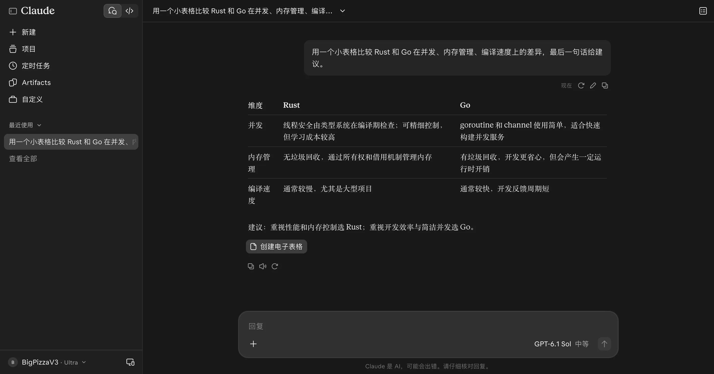
拓展能接管界面、命令、模型工具、agent 钩子和发往模型的请求与回复；再加上一整套开箱即用的增强、多开，以及直连 / 网关两种连接方式。
不用自己写代码。接入后，Codex 能看到自己的页面结构、写出拓展、热重载，再截图确认效果。
把发送按钮改成🐶狗头、
把上下文圆环改成彩虹进度条。说「插件」也行。
拓展是一个带 codexpp.json 的文件夹。每次注册都随拓展卸载自动撤销，改完即热重载，坏了也不影响别的拓展。
输入框上方、对话区、侧栏、标题栏都有插槽；还能加页面、菜单项和会话行操作。
registerSlot
输入 / 时提示拓展命令并可 Tab 补全；发送按钮那一行加图标按钮。
registerCommand
每条消息下加按钮或一块内容，右侧面板随开随关，主区域自动让位。
registerSidePanel
在清单里声明工具，经 Codex++ 拓展 MCP 提供给模型调用。
tools
工具前后、回合结束等钩子由 Codex++ 统一分发给各拓展。
hooks
请求发往上游前改写、响应流里改写、失败时自定义重试。
gateway
工具执行前改参数、代为执行，或改写工具结果。
toolPipeline
后台进程常驻；拓展之间按名字提供和调用服务，跨进程也行。
backend
只读查询与订阅会话；声明配置项自动生成设置表单，支持多语言。
config
{
"id": "pomodoro",
"name": "番茄钟",
"version": "0.1.0",
"engines": { "codexpp": "^2.1" },
"renderer": ["renderer.js"]
}
codexPlus.extension((ctx) => { const bar = ctx.registerSlot({ slot: "composer.above", render: ({ container }) => { container.textContent = "🍅 25:00"; } }); ctx.registerCommand({ name: "focus", description: "开始专注", run: () => ctx.toast("开始专注 25 分钟") }); ctx.setInterval(() => bar.refresh(), 1000); // 卸载时自动清理 });
完整接口见 拓展开发指南，类型声明在仓库 types/ 下。
精选、社区、本地拓展和 dsh 插件都在管理器「拓展」页。装之前看得到每个拓展声明的全部能力。
每一条都经 Codex++ 审核，安装锁定到审核过的那次提交；作者之后的改动要再审核才会推送给你。有下架名单，也会标出冒名的同名拓展。

在本地拓展那一行点「发布」：先查清单、密钥与体积，再建仓库、打 tag、传 release、加 topic，每一步的输出都显示在发布框里。
GitHub 上打了 codexpp-extension 标签的公开仓库自动出现在这里。标着「未审核」，装之前列出它要的后台进程、钩子、网关中间件和模型工具，装完默认不启用。

DeepSeek Harness 的工具插件经 Codex++ 托管的 MCP 在 Codex 里运行，skill 导入 Codex Skills；系统提示词与事件自动转成网关 instructions 和 Codex 钩子。跑不了的逐项说明原因。

每项增强都能单独开关；关掉增强总开关，供应商与启动管理照常可用。
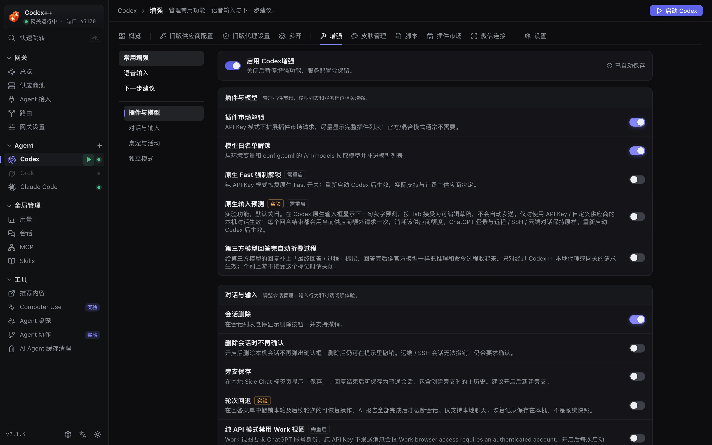
在 Codex 对话里说「让 DeepSeek 实现这个功能」，结果回到当前对话；忙时自动排队。

每个供应商身份一个隔离实例，配置、会话和用户数据互不干扰。
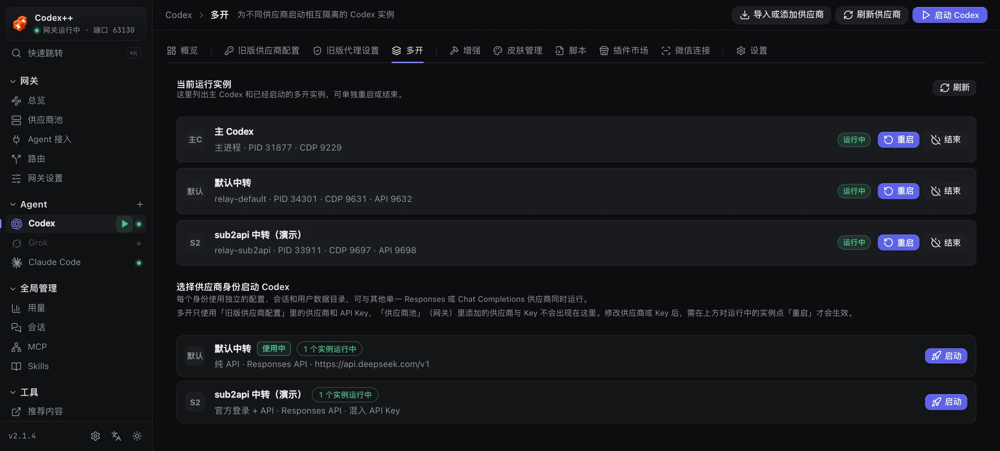
输入框下方显示输出吞吐、缓存命中与上下文占用。

纯 API Key 也能用 Standard / ⚡ Fast 控件。
扫码连接本机 Codex，出门也能派活。
点一下会压扁、带音效，图片和音效都能换。
社区主题、自定义图片，彩虹粒子打字特效。
从 Codex++ 启动 Codex 后，这些改动直接出现在官方应用里。


两种模式互不影响，Codex 在「连接与供应商」顶部的「连接方式」里一键切换。不打开网关，Codex++ 就和 1.x 时一样用。
Codex、Claude Code、Grok 共用一份供应商池。
适合：同时用多个 Agent、手里有多家供应商或多个 Key。网关只在 Codex++ 运行时可用。
Codex 原来的供应商切换方式，完整保留。
适合：只用 Codex，或希望退出 Codex++ 后配置照常生效。在「Codex → 连接与供应商」里选供应商即可。
每个模型可以有自己的上下文窗口。网关在供应商详情里按模型填（可按公开资料一键填）；直连模式在模型列表里写后缀，Codex++ 生成独立的 model_catalog_json，让 Codex 按当前模型使用对应窗口。
# 直连模式的模型列表 deepseek-v4-pro[1M] claude-opus-5.5[200K] your-model[128000]
原版 Claude Desktop 不登录账号，模型走你自己的 API：聊天、Cowork、Code，以及听写、Computer Use、后台模式都在。Claude Code 也能经网关接任意供应商。
常见的接入办法只给 Claude Code 改一个 ANTHROPIC_BASE_URL，或把 Claude Desktop 切到官方的 3p（第三方推理）部署：模型换成了你的，界面和功能却跟着缩水。Codex++ 的「完整功能模式」换了个思路——在本机给原版 Claude Desktop 当服务端：界面是 claude.ai 的完整版，账号、套餐和功能开关由本地服务应答，回复走你的 Codex++ 供应商池。
项目、Artifacts、定时任务、自定义都在；显示名和套餐（Free / Pro / Max / Ultra）自己定，只影响界面显示。
模型选择器里直接列出池里的模型，显示友好名和供应商；按模型名路由、多 Key 轮换、出错换下一家。
本地 SenseVoice 听写，结果只进输入框、不自动发送；Computer Use 入口与后台模式可用。
网关为每个模型声明的上下文窗口写进 Claude 的设置，切换模型不必重启，不再一律按 200k 算。
| 能力 | 常见接入：改 Base URL / 3p 部署 | Codex++ 完整功能模式 |
|---|---|---|
| 接入范围 | 多数只管 Claude Code 命令行 | Claude Desktop 的聊天、Cowork、Code 整套界面，外加内置的 Claude Code |
| 界面 | 3p 部署走的是第三方推理版界面 | claude.ai 完整界面：项目、Artifacts、定时任务、自定义入口都在 |
| 账号 | 想要完整界面就得登录 Anthropic 账号 | 不需要登录 Claude 账号；本地账号的显示名与套餐可自定 |
| Computer Use 与后台模式 | 3p 部署会过滤这类远端功能开关，入口不可用 | 入口与后台模式可用（仍需在系统里授予辅助功能和屏幕录制权限） |
| 语音输入 | 官方听写依赖 Claude 账号 | 本地 SenseVoice 识别，结果只进输入框 |
| 上下文窗口 | 没有声明时一律按 200k | 逐模型声明，切换模型不必重启 |
| 供应商 | 一个 Base URL 对一家 | 整个 Codex++ 供应商池，协议自动互转 |
「常见接入」泛指只改 Base URL，或使用 Claude Desktop 官方 3p 部署配置的做法，具体工具可能有差异。
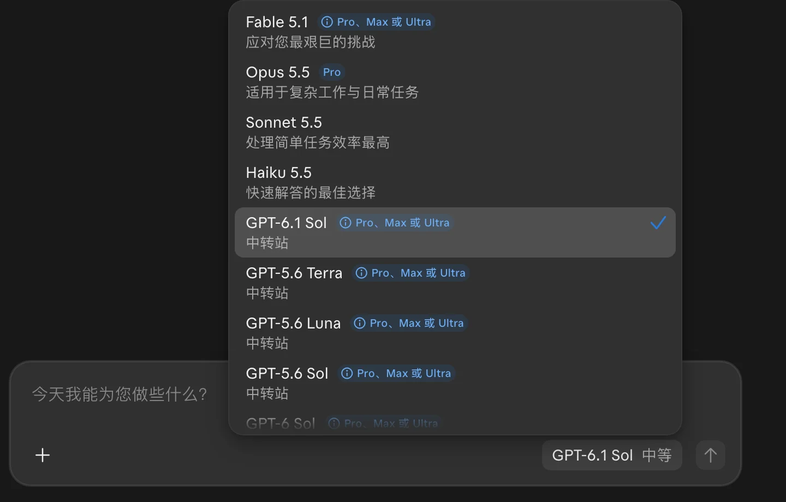
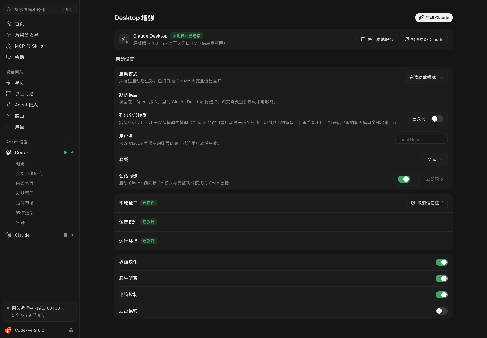
原版 Claude 经本地服务启动，还原 claude.ai 完整界面与听写、Computer Use、后台模式。需要信任一枚本机证书，可随时一键取消。
适合：想用 Claude Desktop 全部功能，又不想登录 Claude 账号。
原版 Claude 用隔离的配置目录直连 Codex++ 网关，不装证书，最省事。
适合：只聊天、写代码，用不到那几项远端功能。
在 Claude.app 的副本上加中文界面、听写与 Computer Use，官方原件不动；还能解锁 Claude Code 的 Bash 时间限制。
适合：继续用自己的 Claude 账号，只想补几项功能。
命令行里的 Claude Code，和继续用自己账号的补丁版，也都照顾到了。
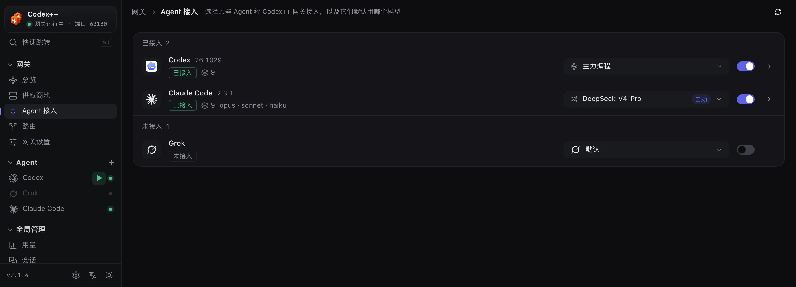

本地网关让 Codex、Claude、Grok 等 50 多个 Agent 共用供应商、按模型名路由、出错换下一家；Computer Use、会话、MCP 与 Skills 也在这里跨 Agent 统一管理。
侧栏切 Agent 与页面，顶部页签切分页。点下面的页签看看，或者直接在线体验（演示数据）。
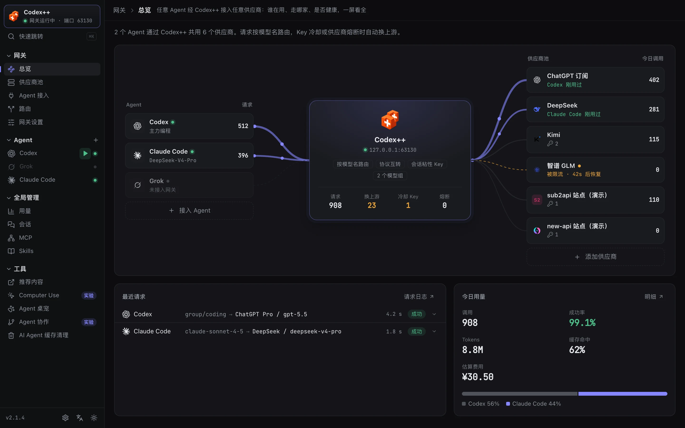
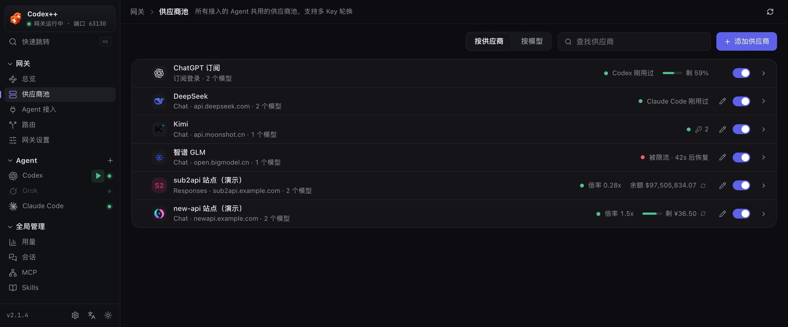
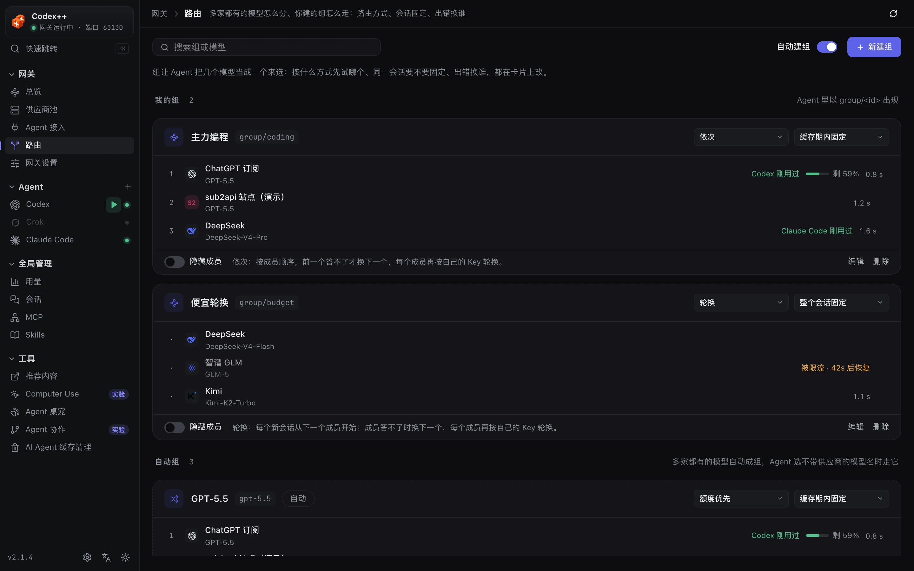
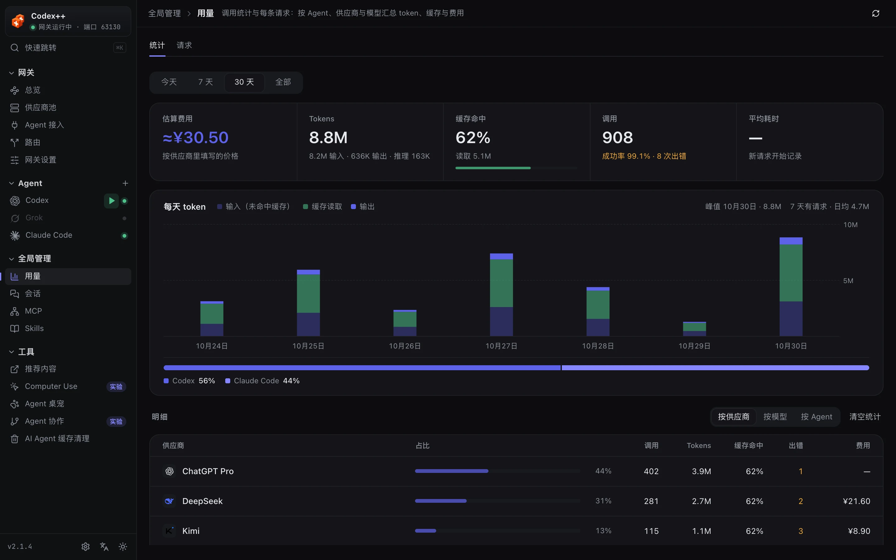
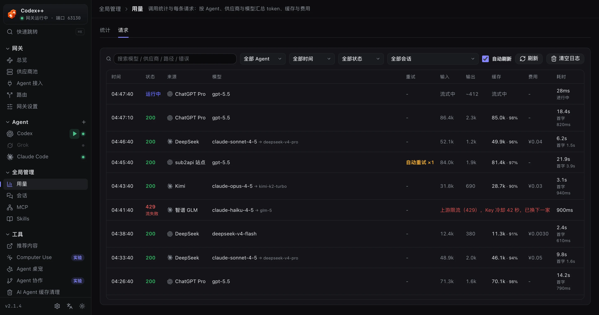
精选、社区、本地拓展和 dsh 插件都在一页：装别人的，也管自己做的。
接入网关后，Agent 的请求都发给本机的 Codex++。它按模型名在供应商池里挑一家，限流就换 Key，出错就换下一家，对 Agent 来说什么都没变。
127.0.0.1 · 本机运行
裸模型名、指定供应商或模型组三种写法；多家都有的模型自动成组。
Key 轮换、限流冷却、401 停用；ChatGPT、Copilot、Cursor 等订阅登录进池。
Anthropic、Chat、Responses、Gemini 协议互相转换，Agent 和上游不必说同一种协议。
每条请求的 token、缓存与估算费用，按 Agent、供应商、模型汇总。
deepseek-v4-pro池里提供这个模型的供应商；多家都有时自动成组，出错按顺序换下一家deepseek/deepseek-v4-pro只发给这一家group/coding你建的模型组，按组的路由方式挑成员命令行、桌面应用和 IDE 里的 Agent，只列出本机装了的；Claude Code 还能用 Chat / Responses 协议的上游。
在网关里登录，显示套餐与剩余额度；和 Agent 自己的登录互不影响。
不属于某一个 Agent 的功能，在管理器里统一管。
把 Codex 桌面版里的电脑操控与 Chrome 浏览器控制，经 MCP 接给 Claude Code、Claude Desktop、DeepSeek Harness 等客户端。点「接入」，重启客户端就能用。

Codex、Claude Code、Claude Desktop、Grok 的本地会话一个列表，搜索、删除、撤销。
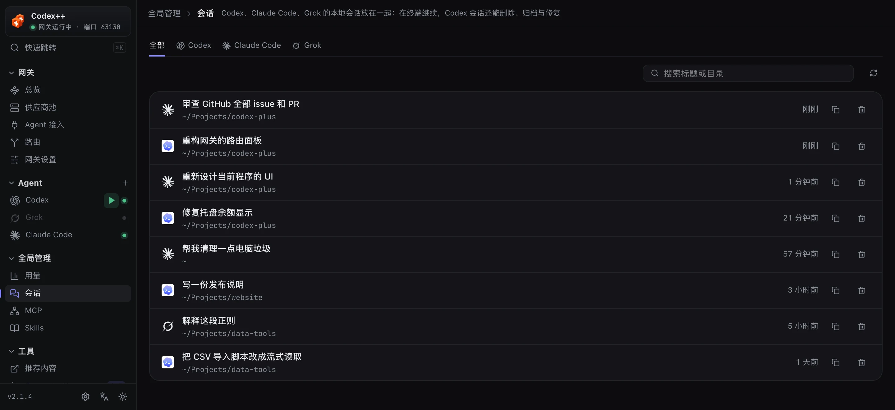
按模型设置上下文窗口、价格与思考等级。
点托盘图标就能换模型、看用量和最近请求。
MCP、Skills 按 Agent 启用；Codex 插件市场可装可卸。
扫描并清理 Codex、Claude 与 Codex++ 的缓存。
Codex 功能配合官方 Codex / ChatGPT 桌面应用使用；Claude、Grok 相关功能需安装对应客户端。想用 Claude 完整功能模式，看 上面的三步。
打开「网关 → 供应商池」：填 API Key、登录 ChatGPT / Copilot / SuperGrok 订阅，或从直连模式、OpenCode 一次导入多家。模型列表和价格自动填好。
在「网关 → Agent 接入」给 Codex、Claude Code、Grok 打开开关，选默认模型。Claude Code、Grok 接入后照常在终端里用。
点「启动 Codex」或侧栏 Codex 行的启动按钮，增强随之注入。依赖注入的设置改完后，从 Codex++ 重启 Codex 生效。
不想用网关？直连模式照旧：在「Codex → 连接与供应商」把「连接方式」切到「直连」，选供应商后启动即可。API Key 只保存在本机。
Codex
精选与官方拓展经 Codex++ 审核，安装锁定到审核过的那次提交。社区拓展未经审核，作者可以在新版本里加入任意代码：安装前会列出它声明的全部能力（后台进程、钩子、网关中间件、模型工具、路由、页面脚本），装完默认不启用，请只安装你信任的作者的拓展。
在管理器「拓展」页的「对话造拓展」点「接入 Codex」，然后新开一个 Codex 对话说需求。拓展写在你自己的拓展目录里，每次写入都走 Codex 的工具审批；拓展出错只影响它自己，可以在「本地拓展」里停用，或让 agent 接着改。
增强脚本只挂载到从 Codex++ 启动的官方应用上。自己打开的 Codex，侧栏 Codex 行会提示「未挂载」，它的按钮变成「重启并挂载」，点一下即可。仍然没有时，到「设置 → Codex」（含安装维护）和「设置 → 日志与诊断」检查应用路径、启动状态和诊断日志。macOS 上也可以打开「自动接管官方 App」，自己双击启动官方 App 时由 Codex++ 接管。
先确认已经保存，并通过 Codex++ 重启 Codex。直连模式在「Codex → 连接与供应商」中打开该模型的配置，设置「Fast（priority）支持」，保存模型与供应商后重启；网关模式下模型组里每个成员都支持 Fast 时，选这个组也能开 Fast。此功能只恢复客户端入口，服务限制与计费仍以供应商为准。
可以分别关闭，也可以关闭增强总开关。Codex++ 依赖官方桌面应用的页面结构、CDP 和本地数据格式；官方应用更新后，部分功能可能需要跟随适配。修改供应商配置或会话数据前，请保留备份。
Claude
多数工具只改 Claude Code 的 Base URL，或者让 Claude Desktop 用官方的 3p 部署，后者界面是第三方推理版，Computer Use 等远端功能开关也会被过滤。完整功能模式由 Codex++ 在本机应答 claude.ai 的账号与功能接口，界面是完整版，回复走你的供应商池，所以听写、Computer Use、后台模式这些入口都能用，而且不需要登录 Claude 账号。
目前仅支持 macOS，需要装好 Claude Desktop 和 Node.js。在「网关 → Agent 接入」给 Claude Desktop 选默认模型，再到「Claude → Desktop 增强」把启动模式切到「完整功能模式」，准备并信任本机证书。启动前先完全退出 Claude，再从 Codex++ 启动；已经打开的 Claude 不会自动接上。
证书和私钥由 Codex++ 在本机生成，放在它自己的状态目录里，只用于本地服务应答发往 claude.ai 的请求；只有从 Codex++ 启动、指向本地服务的 Claude 才会经过它。不用时在同一页点「取消信任证书」即可从钥匙串移除；切回 3p 模式时，Codex++ 会还原它改过的 Claude 部署配置。
网关与通用
网关模式先在供应商池详情里点「测试」，看状态码、首字耗时和上游错误原文；「用量 → 请求」里失败的请求也会直接显示原因。直连模式在供应商详情中运行模型测试或 Provider Doctor；纯 API 和官方登录 + API 使用不同的认证位置，不要手工复制两种模式的 auth.json。
接入网关的 Agent 一直指着本机网关，网关只在 Codex++ 运行时可用，再打开 Codex++ 就恢复。想在退出后用回直连，可在「设置 → 网关」里打开「退出 Codex++ 时恢复直连」（默认关闭）；安装更新前总会先切回直连。
接入后需要重启对应客户端才会加载工具；Claude Desktop 退出时会重写自己的配置，建议先完全退出再接入。仍然没有时，在「Computer Use」页的「高级」卡里核对客户端实际读取的目录，并确认已给 ChatGPT 授予辅助功能与屏幕录制权限。目前仅支持 macOS。
设置了 CODEX_HOME 时，Codex 主目录以该变量为准；否则使用 ~/.codex。Codex++ 的状态与日志在 ~/.codex-session-delete/。API Key 只保存在本机，提交反馈前请隐藏密钥与认证信息。
遇到问题带上系统、Codex++ 版本、复现步骤与已脱敏的日志提 issue；也欢迎分享拓展、主题和使用经验。
服务范围、价格与活动以各平台官网说明为准。
想支持项目或展示品牌？联系维护者。
免费开源 · AGPL-3.0 · Windows 与 macOS。拓展、配置与会话数据都留在你自己的电脑上。